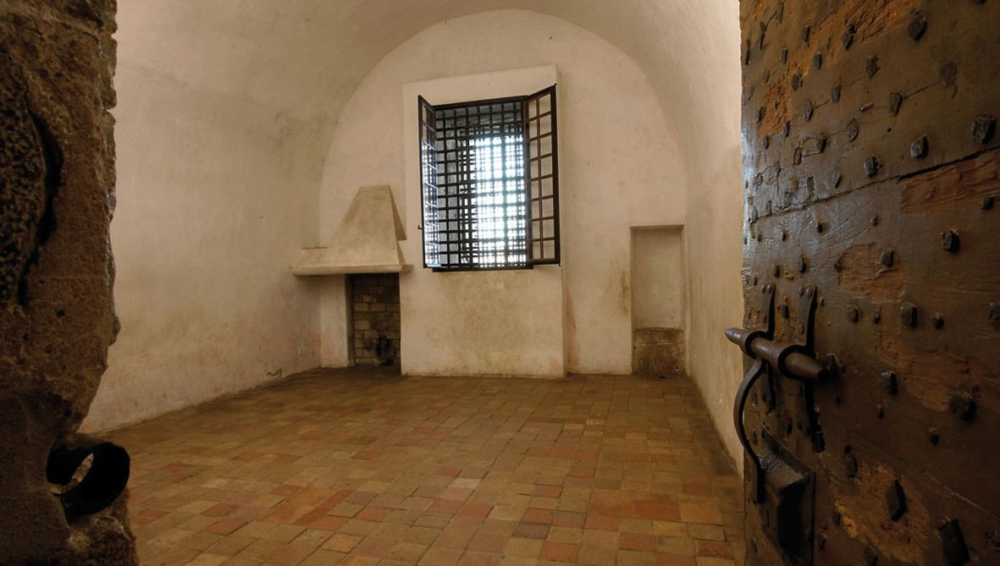
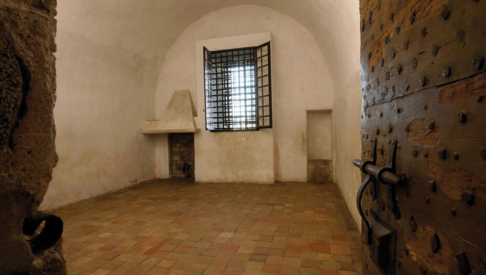

Les Musées
Le Musée des explorations du monde
Situé sur les hauteurs du Suquet, le quartier historique de Cannes, dans les vestiges du château médiéval des moines de Lérins classé monument historique, le musée des explorations du monde domine la Croisette, la baie et les îles de Lérins.
Le baron Tinco Martinus Lycklama à Nijeholt (c'est son nom complet), d'origine néerlandaise, vécut à Cannes à la fin du XIXe siècle. Amateur éclairé pour les antiquités, l’orientalisme, l’ethnographie et l’art primitif, il légua en 1877, ses collections à la Ville de Cannes. En 1919, la commune de Cannes acquit l’ensemble des bâtiments sur les hauteurs du Suquet afin d’y loger son musée, encore installé à l'époque à l’hôtel de ville.
Dans une suite de petites salles entourées de jardins, sont présentées des collections d’archéologie méditerranéenne (Égypte, Grèce, Rome), d'éthnologie et d'arts premiers (Himalaya, Océanie, Amériques, Asie). La Chapelle Sainte-Anne (XIesiècle) rassemble un exceptionnel ensemble d’instruments de musique du monde entier (Asie, Afrique, Amérique, Océanie). Trois salles consacrées à l'Orientalisme et aux arts de l'Iran s’ouvrent sur la cour du musée et la tour médiévale carrée du XIIesiècle d’où l’on découvre, après avoir gravi 109 marches, un admirable panorama.

Musée du Masque de fer et du Fort Royal
Au large de Cannes, sur la première des îles de Lérins, l'île Sainte-Marguerite, le musée du Masque de fer et du Fort Royal occupe la partie la plus ancienne du Fort Royal de type Vauban.
Ce fort, classé monument historique, est bordé de pins et d'eucalyptus et surplombe la mer. Vous pouvez y visiter les anciennes prisons d'État et la célèbre cellule du Masque de fer où le mystérieux prisonnier fut incarcéré durant onze années, mais aussi, le mémorial huguenot et les peintures murales réalisées par Jean Le Gac sur le thème du peintre prisonnier. Dans les citernes romaines et au premier étage sont présentés le matériel archéologique sous-marin provenant des épaves romaine et sarrazine de la Tradelière et du Batéguier (céramiques, cargaisons d'amphores, verres…) et les fragments de peintures murales romaines provenant des fouilles terrestres de l'île Sainte-Marguerite. Un espace consacré aux expositions temporaires s'ouvre sur une vaste terrasse dominant la mer face au littoral cannois, des Alpes du Sud au Cap d'Antibes et à l'Estérel.
 

Eco Musée sous-marin
L'écomusée sous-marin est composé de 6 statues immergées près du rivage Sud de l'île Sainte-Marguerite. Plusieurs compagnies proposent des navettes régulières en bateau entre Cannes et les îles de Lérins (île Sainte-Marguerite et île Saint-Honorat).
Lorsque vous arrivez à l'embarcadère, traversez lîle pour vous retrouver sur le rivage opposé. L'écomusée sous-marin est à l'aplomb du chemin de la maison forestière. Il est situé à une distance allant de 84 à 132 mètres du rivage et une profondeur de 3 à 5 mètres.
Les sculptures sont accessibles au plus grand nombre de plongeurs équipés simplement d’un masque et d’un tuba.